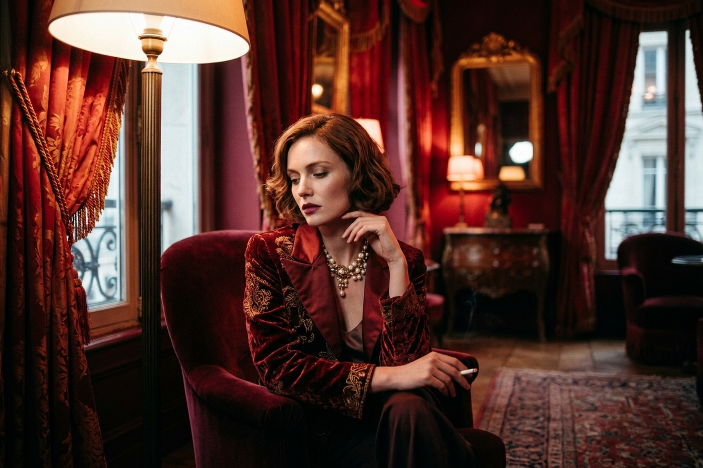

Rooted in the tactile discipline of analog photography, my work celebrates unscripted human emotion, natural light, and quiet permanence. Through all-mechanical bodies and vintage prime glass, every shutter actuation is a deliberate commitment to seeing the world without digital noise.
Based between Tokyo and London, I specialize in editorial portraiture, street documentary, and architectural studies worldwide. Guided by classical darkroom craftsmanship and patient observation, I create enduring visual narratives designed to outlast transient digital trends.
Film demands anticipation. With thirty-six frames per roll and no digital preview screen, analog photography requires complete presence with the subject. Each frame is an archival physical record formed by silver halide crystals responding to living light.
Every project dictates its own emulsion. From the gentle skin tones of Kodak Portra to the dramatic silver grain of Ilford HP5, my choice of film stock establishes the color grade and emotional climate of each commission before shooting even begins.
Types of Photography
Cost
01.
Editorial Portraits
$450
02.
Monochrome Street
$350
03.
Landscape & Fine Art
$550
04.
Documentary & Travel
$750
05.
Twilight & Nocturne
$850
Every photograph is a delicate synthesis of light, intention, and chemistry. From the silent canals of Venice to the nocturnal glow of Kyoto, each frame represents an archival dedication to analog mastery. Explore the curated portfolio series below.
Venezia at Dawn

The Red Room
Golden Hour Mirage
Midnight in Kyoto
Coastal Reverie
Master Fine Art Print